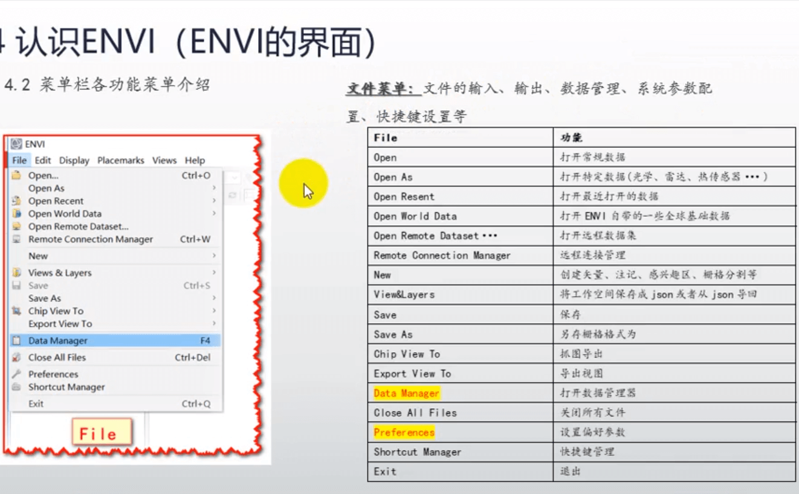
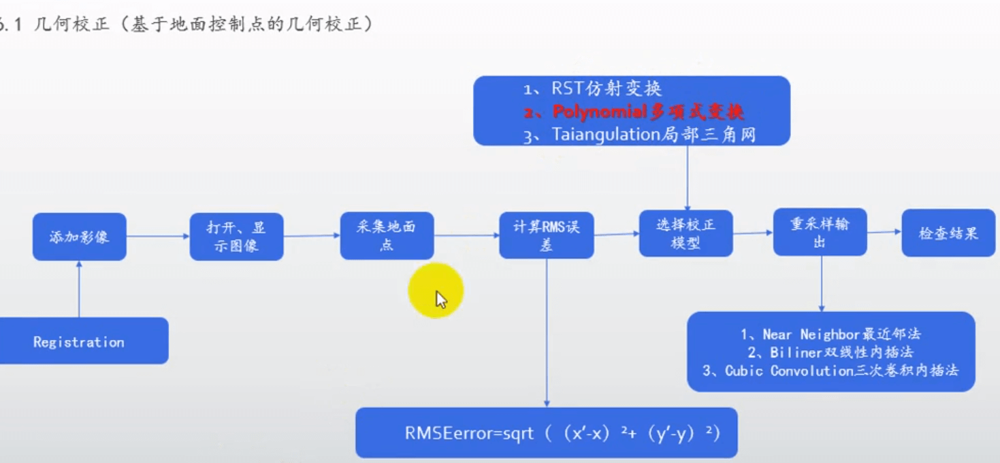

一、ENVI工具界面翻译
1.File文件菜单栏功能翻译
2.Edit编辑菜单栏功能翻译
3.Display显示菜单栏功能翻译
4.Placemarks地名标注菜单栏功能翻译
5.Views视图菜单栏功能翻译
6.Help帮助菜单栏功能翻译
二、软件界面
ENVI软件界面截图
File菜单翻译截图

地物波谱概念介绍及图例：

二维散点图概念介绍及图例：

首选项中显示配置注意：
注意：导出视图和视图截屏的不同处
鼠标取值（用于图片测量）快捷键
工具箱中重采样工具介绍

主要商业卫星介绍

数据预处理
几何校正



在经典版本中:
1）点击菜单栏的文件 ---> 打开图像文件 ---> 选择光盘映像文件打开 ---> 选择 RGB Color ---> 在上面(图片选择框)中选择4、3、2波段 ---> Load RGB ---> Display #1 选择 New Display ---> 在原来操作框中选择另一张图片并且选择Gray Scale ---> load RGB
2）点击菜单栏的地图 ---> 几何校正 ---> 控制点选取 图像--图像 ---> Base Image选择#2、Warp Image选择#1 ---> OK
3）在第一张、第二张图分别找到一样位置的点点击Add Point，连续找三个不同位置的点（必须3个点），当你在第二张图片上随机选取一个点之后，再点击Predict，第一张图片就会找到与第二张图片几乎一样的同位置点
4）点击File ---> Save GCPs to ASCII 就会将刚才的标注点保存出一个文件方便下次操作
5）图3点击Options ---> 点击最后一项自动选点位 ---> 选择tm数据信息量大的第五波段 ---> 自动生成点位的参数设置，点击OK ---> Show List ---> Options ---> Oder Points by Error 以最大误差排列所有点 ---> 通过点击On/Off关闭误差大的点位
1）点击菜单栏的文件 ---> 打开图像文件 ---> 选择光盘映像文件打开 ---> 选择 RGB Color ---> 在上面(图片选择框)中选择4、3、2波段 ---> Load RGB ---> Display #1 选择 New Display ---> 在原来操作框中选择另一张图片并且选择Gray Scale ---> load RGB
2）点击菜单栏的地图 ---> 几何校正 ---> 控制点选取 图像--图像 ---> Base Image选择#2、Warp Image选择#1 ---> OK
3）在第一张、第二张图分别找到一样位置的点点击Add Point，连续找三个不同位置的点（必须3个点），当你在第二张图片上随机选取一个点之后，再点击Predict，第一张图片就会找到与第二张图片几乎一样的同位置点
4）点击File ---> Save GCPs to ASCII 就会将刚才的标注点保存出一个文件方便下次操作
5）图3点击Options ---> 点击最后一项自动选点位 ---> 选择tm数据信息量大的第五波段 ---> 自动生成点位的参数设置，点击OK ---> Show List ---> Options ---> Oder Points by Error 以最大误差排列所有点 ---> 通过点击On/Off关闭误差大的点位

新版
几何校正注意事项：
1、选择永久性地物 水塘 地标 道路的交叉口 小路 大路
2、点要分布均匀
3、采集控制点 一般35个以上点
1、选择永久性地物 水塘 地标 道路的交叉口 小路 大路
2、点要分布均匀
3、采集控制点 一般35个以上点
影像融合、图像融合
包含各种算法在里面
经典界面的位置

 用其中一个插件的方法来图像融合
用其中一个插件的方法来图像融合


用其中一个插件的方法来图像融合
双击选择低波段和高波段进行融合
影像镶嵌
镶嵌是将图像链接在一起以形成更大图像或者一组图像的过程。ENVI的图像镶嵌功能可提供交互式的方式，
将有地理坐标或者没有地理坐标的多幅图像合并，生成一幅单一的合成图像。
影像镶嵌有 无缝镶嵌工具和基于像素的图像镶嵌
点击影像镶嵌 ---> 无缝镶嵌工具 ---> 点击+ (添加两张) ---> 点击 重计算外边框 ---> 点击 定义输出区域 选各种需要羽化的区域
---> 点击 Accept Subset Area ---> 点击颜色校正（可以进行颜色的校正） --->
或者可以点击接边线（接边的处理,类似ps 的羽化，将不需要的比如云什么的切出去）
在输出时，重采样选择->三层卷积 选择输出波段->432波段
首先先将需要镶嵌处理的图片引入
点击影像镶嵌 ---> 基于像素的图片镶嵌 ---> 点击import 全选两张图片 ---> 往大调整 Xsize和Ysixe ---> ok
---> 选中图片右击选择Raise Image one Position ---> 调整图片位置进行拼接 ---> 拼接完毕点击文件File ---> Apply --->选择 ---> 改名字保存桌面 ---> 会在View视图窗口生成新的图片